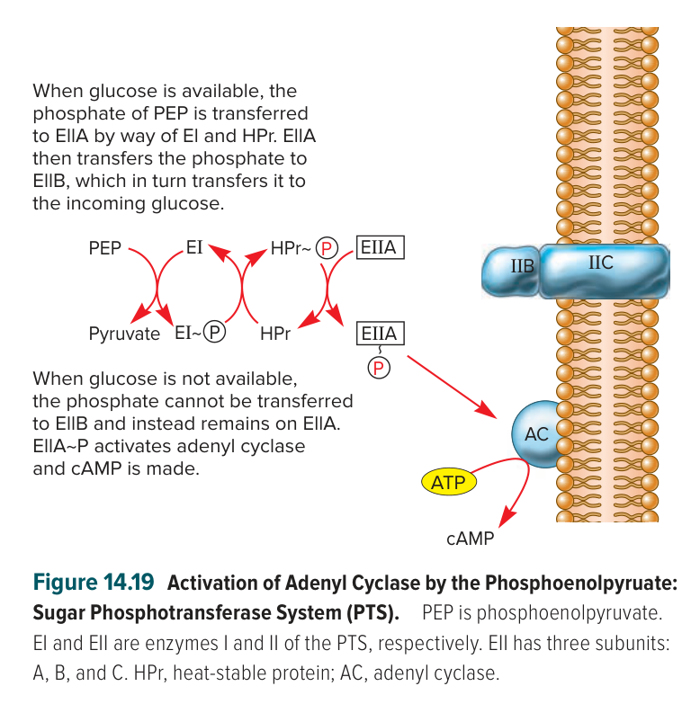
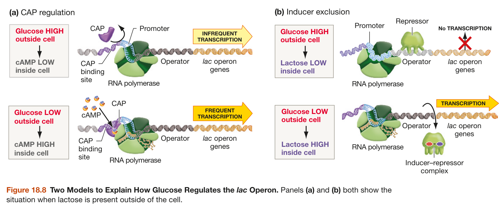
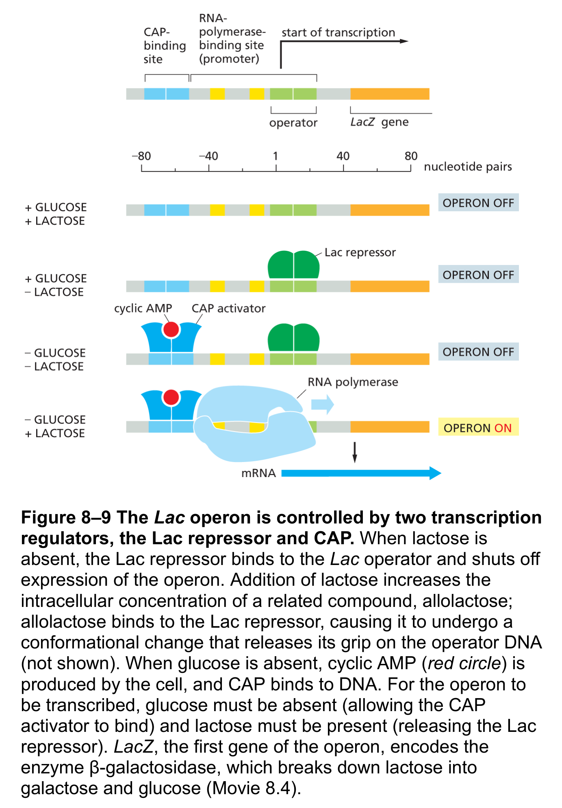
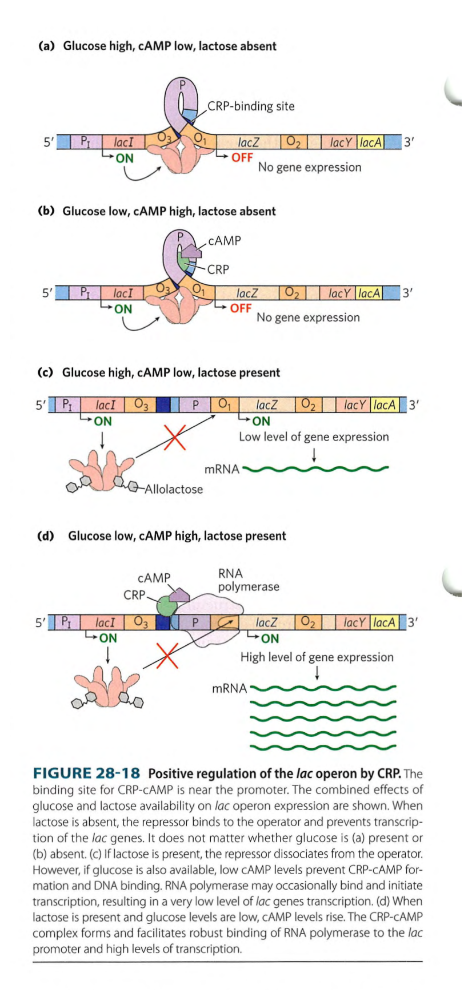
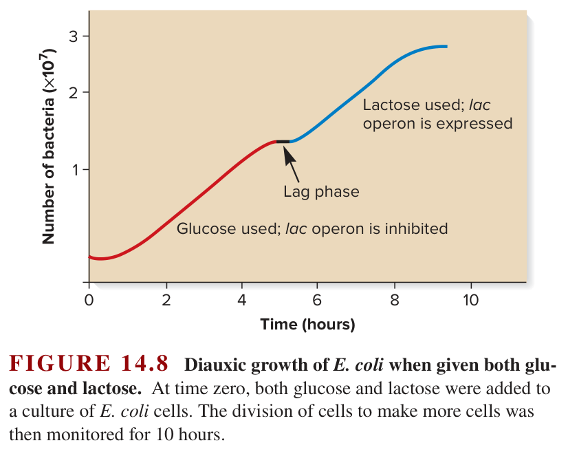

大腸桿菌怎麼知道環境中有沒有葡萄糖與乳糖？
細菌沒有眼睛也沒有味覺受器——從「基礎滲漏轉錄」破解先有雞或蛋，到 PTS 磷酸接力、cAMP–CAP 油門與「誘導物排除」，一次搞懂四種糖類環境的完整判讀邏輯。
大腸桿菌不是靠「看」或「聞」，而是用兩條各自獨立的分子感測線路同時讀出環境中的兩種糖，再由 lac 操縱組像電腦 AND 邏輯閘一樣整合決定開不開機。
平時抑制蛋白並不是 100% 關死，細胞會靠基礎滲漏轉錄常備少數幾分子通透酶（LacY）與 β-半乳糖苷酶（LacZ）。外面有乳糖時，先運進來並轉成異乳糖拉開抑制蛋白（鬆煞車）；沒乳糖就繼續踩死煞車。
靠細胞膜運送葡萄糖的 PTS 磷酸轉移酶系統：沒有葡萄糖時，磷酸基滯留在中繼蛋白 EIIA 上，活化腺苷酸環化酶產生大量 cAMP，讓 cAMP–CAP 結合啟動子上游（踩滿油門）；有葡萄糖時，磷酸基不斷被轉給進門的葡萄糖，不只讓 cAMP 驟降（不踩油門），去磷酸化的葡萄糖轉運蛋白還會直接卡住乳糖通透酶（誘導物排除），把乳糖擋在門外！
有葡有乳 → 沒油門＋乳糖被擋門外（表現極低，專心吃葡萄糖）；有葡無乳 → 沒油門＋煞車踩死（關閉）；無葡有乳 → 油門踩滿＋煞車鬆開（全力全開！）；無葡無乳 → 油門就位但煞車踩死（關閉待命）。
01 怎麼知道環境「有沒有乳糖」？——破解先有雞還是先有蛋
學到乳糖操縱組時，思緒敏銳的高中生一定會追問一個超棒的邏輯問題：「沒乳糖時，lac 操縱組不是被抑制蛋白關起來了嗎？既然關起來，細胞膜上就沒大量通透酶運乳糖、細胞裡也沒大量 β-半乳糖苷酶把乳糖變成異乳糖——那外面突然出現乳糖時，第一批乳糖是怎麼進門報信的？」
答案非常巧妙：Lac 抑制蛋白對操作子的關閉從來不是 100% 絕對鎖死！
- 常備極微量的「基礎滲漏轉錄（basal / leaky transcription）」：抑制蛋白與操作子的結合是可逆的；偶爾它會短暫脫離操作子，讓 RNA 聚合酶溜過去合成極少量 mRNA（抑制使轉錄速率下降約 10³ 倍，但不是零）。因此即使在完全沒有乳糖的環境中，每個大腸桿菌細胞裡仍隨時保底有不到 3 個分子左右的 β-半乳糖苷酶與少數幾個半乳糖苷通透酶（LacY）常駐待命（Cox 2e Ch. 20；Lehninger 8e Ch. 28；Prescott 12e Ch. 14；Pierce 7e Ch. 16）。
- 有乳糖 → 正回饋滾雪球：當外界出現乳糖，這幾個「常備通透酶」把少量乳糖運進細胞 → 常備 β-半乳糖苷酶順手把一小部分乳糖異構化成異乳糖（allolactose）。因為整個細胞裡本來就只有約 10 個（約 10–20 個）Lac 抑制蛋白四聚體（Weaver 5e Ch. 07；Cox 2e Ch. 20），一點點異乳糖就足以讓抑制蛋白變形、脫離操作子，進而大量合成更多通透酶與酵素，像滾雪球一樣把系統全面打開。
- 沒乳糖 → 維持鎖定：外界沒乳糖 → 細胞內無異乳糖 → 抑制蛋白保持活性構形，牢牢結合在操作子上擋住轉錄。
關鍵專有名詞白話解析
即使抑制蛋白結合在操作子上，偶爾仍會短暫鬆手，使細胞隨時維持極少量通透酶與 β-半乳糖苷酶當作「常備哨兵」，讓細菌能偵測到突然出現的乳糖。
乳糖進入細胞後由 β-半乳糖苷酶重排產生的異構物（β-1,4 鍵轉為 β-1,6 鍵），是 lac 操縱組真正的生理誘導物。
大腸桿菌輸入葡萄糖的「磷酸接力運輸系統」（PEP → EI → HPr → EIIA → EIIB／EIIC → 葡萄糖）。有沒有葡萄糖接走磷酸基，就是細菌感知外面有無葡萄糖的物理感測器。
腺苷酸環化酶以 ATP 合成 cAMP（缺葡萄糖的飢餓訊號）。cAMP 結合 CAP（異化代謝物基因活化蛋白，又稱 CRP）後，就能結合啟動子上游大力招募 RNA 聚合酶。
有葡萄糖時，去磷酸化的葡萄糖轉運蛋白會直接黏上並阻斷乳糖通透酶（LacY），讓外頭的乳糖根本進不來，從源頭防止異乳糖累積。
02 怎麼知道環境「有沒有葡萄糖」？——PTS 磷酸接力與誘導物排除
高中生常背過「葡萄糖低 → cAMP 高 → CAP 活化」，但多數人沒搞懂：葡萄糖只是糖分子，它怎麼讓細胞裡的 cAMP 變低？答案就藏在細胞膜運送葡萄糖的磷酸轉移酶系統（PTS），而且它一口氣連動了兩道機制：
感測線 A：PTS 磷酸接力 → 決定腺苷酸環化酶要不要做 cAMP
大腸桿菌把葡萄糖運進門時，會同時從細胞內的 PEP（磷酸烯醇丙酮酸）拿一顆磷酸基，經由 EI → HPr → EIIA → EIIB／EIIC 一路接力貼到進門的葡萄糖上（讓葡萄糖以葡萄糖 6-磷酸形式進細胞，Prescott 12e Ch. 14）：
- 環境「有葡萄糖」時：進門的葡萄糖不斷把磷酸基領走 → 中繼蛋白 EIIA 處於去磷酸化狀態 → 無法活化細胞膜上的腺苷酸環化酶（同時葡萄糖也會抑制 cAMP 合成並促進 cAMP 流出細胞，Brock 15e Ch. 06；Lehninger 8e Ch. 28）→ cAMP 濃度很低 → CAP 拿不到 cAMP、無法結合 DNA（沒踩油門）。
- 環境「沒有葡萄糖」時：門口沒葡萄糖能領走磷酸基，整條磷酸接力大塞車 → 磷酸基滯留在 EIIA~P（磷酸化狀態）上 → EIIA~P 轉而活化腺苷酸環化酶把大量 ATP 轉成 cAMP → cAMP–CAP 複合體結合到 lac 啟動子上游，彎曲 DNA 並強力招募 RNA 聚合酶（油門踩滿）！

🔍 點擊圖片可全螢幕放大感測線 B（雙重保險）：誘導物排除——有葡萄糖時直接把乳糖門鎖住
不只沒踩油門，現代分子生物學（Cox 2e Ch. 19；Freeman 8e Ch. 18；Raven 13e Ch. 16）還強調第二層超乾脆的控制——誘導物排除（inducer exclusion）：
- 有葡萄糖時：剛把磷酸基交給葡萄糖、變成去磷酸化狀態的葡萄糖轉運蛋白（Cox 2e 稱去磷酸化葡萄糖通透酶），會直接結合並阻斷細胞膜上的乳糖通透酶（LacY）！外頭就算有滿滿乳糖也幾乎進不來，細胞內做不出異乳糖，抑制蛋白乾脆繼續鎖死操作子。
- 沒葡萄糖時：葡萄糖轉運蛋白維持磷酸化狀態，不再卡住乳糖通透酶，乳糖通道瞬間暢通！

🔍 點擊圖片可全螢幕放大03 四種糖類環境完整判讀（AND 邏輯閘與雙相生長）
現在把「有沒有乳糖（煞車：抑制蛋白）」和「有沒有葡萄糖（油門：cAMP–CAP ＋ 誘導物排除）」合在一起，直接解答四種環境組合（涵蓋你問的三種情境，並補齊第四種「無葡無乳」）：
| 環境糖類組合 | 葡萄糖感測 （PTS → cAMP–CAP） |
乳糖感測 （通透酶 → 異乳糖 → 抑制蛋白） |
lac 操縱組表現 | 大腸桿菌的選擇 |
|---|---|---|---|---|
| ① 有葡萄糖 有乳糖 |
PTS 去磷酸化 → cAMP 低，CAP 不結合（沒踩油門）；且誘導物排除大幅阻斷乳糖進門 | 進門乳糖極少（即使少許進入拉開抑制蛋白，沒 CAP 幫忙，RNA 聚合酶也很難結合弱啟動子） | 極低／幾乎關閉 | 專心先吃葡萄糖，不浪費能量合成乳糖分解酵素 |
| ② 有葡萄糖 沒有乳糖 |
PTS 去磷酸化 → cAMP 低，CAP 不結合（沒踩油門） | 沒乳糖 → 無異乳糖 → 抑制蛋白緊綁操作子（煞車踩死） | 完全關閉 （僅極微基礎量） |
直接利用葡萄糖 |
| ③ 沒有葡萄糖 有乳糖 |
PTS 維持磷酸化 → 活化腺苷酸環化酶 → cAMP 高，cAMP–CAP 結合啟動子上游（油門踩滿）；不再阻斷 LacY | 常備少量通透酶運入乳糖 → 轉成異乳糖 → 抑制蛋白脫離操作子（煞車鬆開） | 高度大量表現 （唯一全開！） |
全力合成 β-半乳糖苷酶與通透酶，改吃乳糖 |
| ④ 沒有葡萄糖 沒有乳糖 |
PTS 維持磷酸化 → cAMP 高，cAMP–CAP 結合啟動子上游（油門就位待命） | 沒乳糖 → 無異乳糖 → 抑制蛋白緊綁操作子（煞車踩死） | 關閉 （不浪費能量） |
飢餓待命；一旦之後出現乳糖可立刻啟動 |

🔍 點擊圖片可全螢幕放大+GLU/+LAC、+GLU/−LAC、−GLU/−LAC）皆呈現 OPERON OFF；唯有最下方 −GLUCOSE +LACTOSE 同時滿足「CAP–cAMP 結合」與「抑制蛋白離開」，才呈現 OPERON ON。
🔍 點擊圖片可全螢幕放大
🔍 點擊圖片可全螢幕放大04 經典英文原文教科書逐句考證
以下英文原文皆原封不動回溯自 Ze-Agent Vault 正式譯本，提供高中教師備課、教甄申論與同學深度查證。
[Cox 2e Ch. 20] "Even in the repressed state, each cell has a few molecules of β-galactosidase and galactoside permease, presumably synthesized on the rare occasions when the repressor transiently dissociates from the operators. This basal level of transcription is essential to operon regulation."
[Cox 2e] 即使在抑制狀態，每個細胞仍有少量 β-半乳糖苷酶與半乳糖苷通透酶，推測是在抑制蛋白偶爾短暫離開操作子時合成。這種基礎轉錄量對操縱組調控不可或缺。
[Lehninger 8e Ch. 28] "In the presence of glucose, the synthesis of cAMP is inhibited and efflux of cAMP from the cell is stimulated. As [cAMP] declines, CRP binding to DNA declines, thereby decreasing the expression of the lac operon."
[Lehninger 8e] 隨著細胞內 [cAMP] 降低，CRP 與 DNA 的結合下降，因而減少 lac 操縱組表現。
[Raven 13e Ch. 16] "This mechanism, called inducer exclusion, is now thought to be the main form of glucose repression of the lac operon."
[Raven 13e] 誘導物排除現被認為是 lac 操縱組葡萄糖抑制的主要形式。
05 高中教學、常見陷阱、教甄實戰與查證邊界
第一層（高中課本共同主幹）：有無乳糖的負調控。
第二層（進階高中／教甄必考，如 114 中正高中問 4）：補上「基礎滲漏表現解決先有雞或蛋」＋「cAMP–CAP 正調控」＋四種條件排序（無葡有乳 ≫ 有葡有乳 > 有葡無乳 ≈ 無葡無乳）。
第三層（資優生追問「細菌到底怎麼感覺有葡萄糖？」）：直接搬出 PTS 磷酸接力（EIIA 活化腺苷酸環化酶）與誘導物排除，把原本抽象的因果鏈徹底接通！
三大高頻考試陷阱
- 陷阱 1：「異化代謝物抑制（catabolite repression）是負調控」→ 錯。雖然名稱帶「抑制」，但 CAP–cAMP 機制本質上是正調控（活化蛋白）在有葡萄糖時失效（Brooker 8e Ch. 14；Brock 15e Ch. 06）。
- 陷阱 2：「葡萄糖會直接結合 CAP 使其失去活性」→ 錯。葡萄糖不直接結合 CAP，而是透過 PTS 與腺苷酸環化酶間接壓低細胞內 cAMP 濃度，讓 CAP 缺乏效應物而無法結合 DNA。
- 陷阱 3：「沒有葡萄糖、沒有乳糖時，因為 cAMP 高、CAP 已結合 DNA，所以仍會中度轉錄」→ 錯。抑制蛋白結合操作子（負調控）是必要關卡；只要沒乳糖把煞車鬆開，就算 cAMP–CAP 就位也不會有效表現（AND 邏輯閘）。
- 延伸閱讀（本站相關專題）：想釐清操作子本身會不會轉錄轉譯與「基因 vs. 子」命名密碼，請見 操作子會不會被轉錄與轉譯產生蛋白質？；想看 lac 操縱組在人類大腸與乳糖不耐症情境中的真實運作，請見 乳糖不耐症與大腸桿菌 lac 操縱組；想看科學史如何用部分二倍體推論出整套迴路，請見 Pierce 操縱組推論過程。
本頁所有機制（基礎滲漏轉錄與常備少量 LacY／LacZ、異乳糖為真正誘導物、PTS 磷酸接力調控腺苷酸環化酶、葡萄糖抑制 cAMP 合成並促進流出、誘導物排除阻斷乳糖通透酶、四條件 AND 邏輯閘與雙相生長曲線）皆有上述 10 部原文書正典直接支持。需誠實標明：目前 Vault 內 Prescott 12e Ch. 14 以 PTS / EIIA 說明活化腺苷酸環化酶（並於譯註補出 EIIA^Glc），而 Cox 2e Ch. 19 以「去磷酸化型葡萄糖通透酶」說明直接阻斷乳糖運輸蛋白（誘導物排除），兩者尚未在同一本 Vault 譯本的單一段落中同時以 EIIA^Glc 代號串接兩條路徑，本頁係整合上述正典共識呈現。另 phosphotransferase 與 inducer exclusion 於臺灣教育部《生命科學名詞》TSV 查無獨立詞條，依 Vault 正式譯本慣例譯為「磷酸轉移酶」與「誘導物排除」。